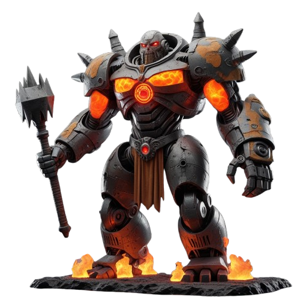

🔥 ОГНЕННЫЙ КОЛОСС
HP 11 800 / 16 000

⚔ АТАКА БОССА
📋 Огненный Колосс — что собрано
Фон
— крепость в лаве с цепями (
bg/fire.png
)
Фон пульсирует
— синхронно затемняется на 22% за 2.6с, акцентирует раскалённое ядро
Лава у ног
— оранжевый градиент 46% высоты с
mix-blend-mode:screen
Heat haze
— backdrop-filter blur(.6px) + skew, дрожит 5с
Босс
высота 67%, маска лап растворяет нижние 26% в лаву
Свечение
— 3-слойный
drop-shadow #ff6600
, пульсирует синхронно с фоном (ядро в груди «горит»)
Искры
— 22 шт., 3 размера (мелкие/средние/крупные), оранжевые/жёлтые/красные, 6–8с цикл
Тряска
— нажми ⚔ АТАКА чтобы увидеть тяжёлую тряску. В реальной игре сработает на coronation strikes (75/50/25%)